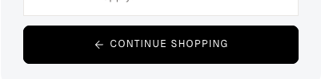
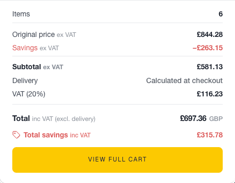
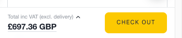

Cart, side cart and checkout buttons
Cart page: Check out
Same button as the product page: Geist 12px caps, no lock icon, black sweep on hover. Continue shopping under it is now white with a dark outline.



Side cart: View full cart

Phone: cart bottom bar and small Continue shopping
The small Continue shopping at the top shows on narrower screens.


Empty cart: Continue shopping
Was a big yellow button; now the secondary style (white, dark outline).